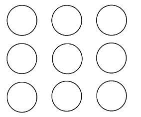
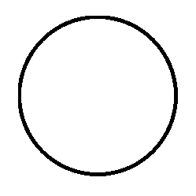
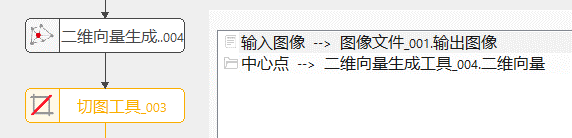
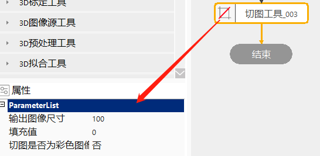
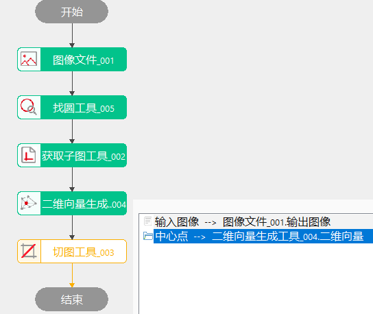
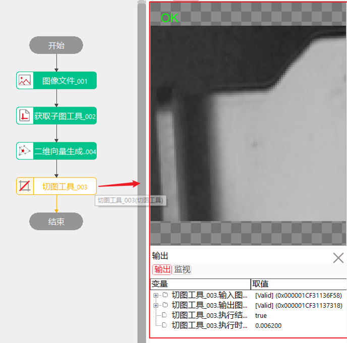

切图即图像切割，是图像预处理方法之一，可以将输入图像指定矩形区域切割出来并输出，以实现对图像关键区域进行处理。
当需要对输入图像进行切割并提取时，会用到切图工具。如图。
输入图像：

结果图像：

切图的过程是根据链入的中心点和输出图像尺寸，计算得出矩形区域大小和位置，然后在输入图像上，将矩形区域提取出来，生成输出图像。




| 现象描述 | 解决方法 |
|---|---|
| 错误栏输出图像数据为空 | 检查数据链是否链入图像，以及图像数据是否正常 |
| 结果图像异常 | 检查数据链是否链入中心点，如果已链入，检查生成中心点的工具输出点是否正确 |
| 错误栏输出中心点无效，不能超出图像 | 所链入的中心点已超出图像范围，检查是否链错了输出图像 |
| 参数名称 | 参数说明 |
|---|---|
| 输入图像 | 被切割的图像，由数据链链入输入图像。 |
| 输入图像(RGB) | 被切割的彩色图像，由数据链链入输入彩色图像。 |
| 中心点 | 要切割的矩形区域的中心点，由数据链链入。 |
| 输出图像尺寸 | 要切割图像的矩形边宽。 |
| 填充值 | 当输出图像大于要切图像时，多余部分由输入的填充数值的颜色填充，数值范围[0-255]之间的整数。 |
| 切图是否为彩色图像 | 是：切图是彩色图像； 否：切图不是彩色图像。 |
| 参数名称 | 参数说明 |
|---|---|
| 输入图像 | 被切割的图像尺寸，供数据链使用。 |
| 输入图像(RGB) | 被切割的彩色图像，供数据链使用。 |
| 输出图像 | 切图后输出的结果图像。 |
| 输出图像(RGB) | 切图后输出的结果图像。 |
| 执行结果 | 工具执行结果。 |
| 执行时间 | 工具执行时间。 |
参见“\Samples\切图工具.gvp”。